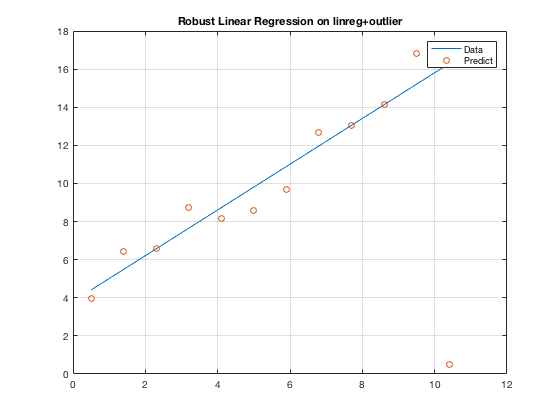

2. Robust linear regression
Contents
Part C.
E1Wmin = 1000;
for ww0 = [-3:0.01:4];
for ww1 = [-3:0.01:4];
E1Wa = sum(abs(z'-[ww0,ww1]*X'));
if E1Wa < E1Wmin;
wstar = [ww0,ww1];
E1Wmin = E1Wa;
end
end
end
zpreda = wstar*X'
figure
plot(x,zpreda)
hold on
plot(x,z,'o')
grid on
legend('Data','Predict')
title('Robust Linear Regression on linreg+outlier')
E1w = @(we1) sum(abs(we1(1)+we1(2)*x-z))
[we1,~] = fminsearch(E1w,[w(1),w(2)])
zprednew = we1(1) +we1(2)*x
zpreda =
Columns 1 through 7
4.4100 5.4900 6.5700 7.6500 8.7300 9.8100 10.8900
Columns 8 through 12
11.9700 13.0500 14.1300 15.2100 16.2900
E1w =
function_handle with value:
@(we1)sum(abs(we1(1)+we1(2)*x-z))
we1 =
3.8089 1.1994
zprednew =
4.4086
5.4881
6.5675
7.6470
8.7265
9.8060
10.8855
11.9650
13.0444
14.1239
15.2034
16.2829
